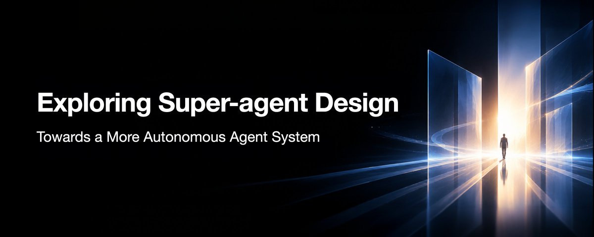
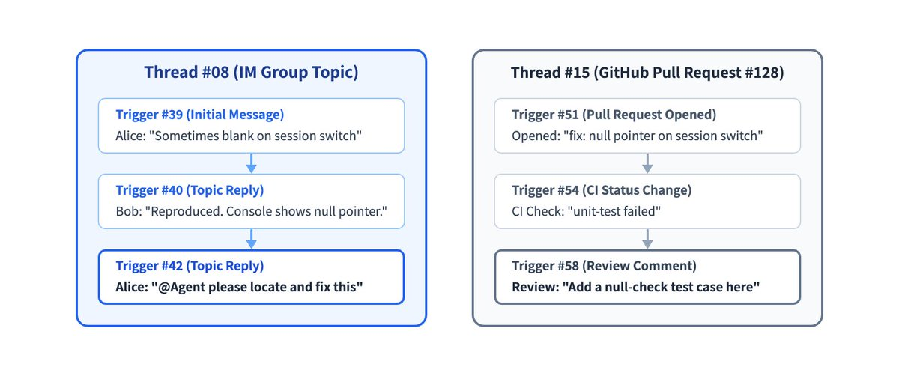
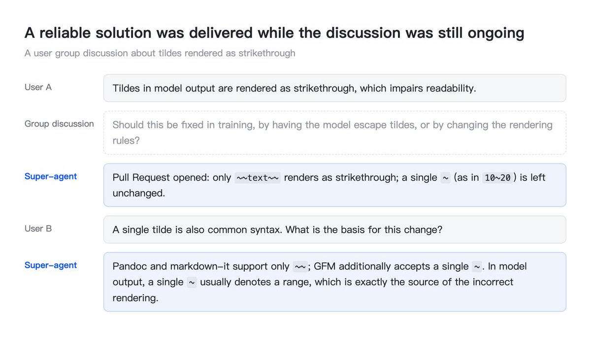
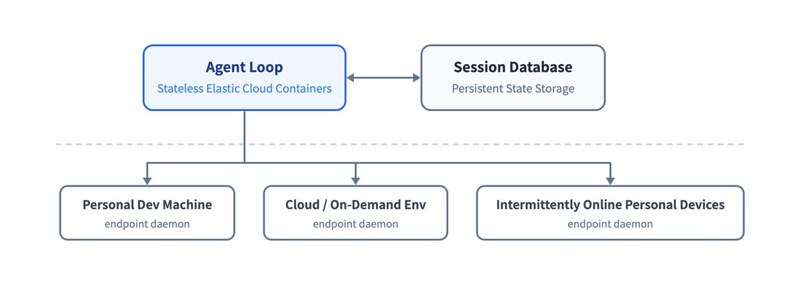
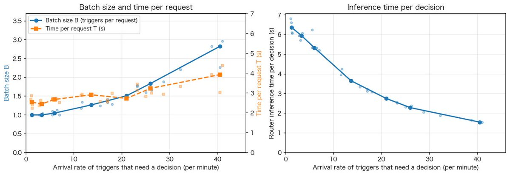

Super-agent 设计探索：迈向更自主的 Agent 系统
Exploring Super-agent Design: Towards a More Autonomous Agent System
- 分类
- AI
- 来源
- X · @DeepSeekHarness
- 原文
- （X）· 中文原文约 （微信公众号）
- 整理
- 作者
- DeepSeek Harness 团队 · 执笔 Yujia Qiao
原文为中文（微信公众号）；本页依据 X 机翻英文版整理为通顺中文阅读笔记；配套原型非正式产品。原文还注明：本文讨论的是架构思路，不是对 DeepSeek Harness 现有功能的介绍。
核心观点 / Highlights
译者补充，不是原文。
- 单任务受限于模型，多任务受限于人的注意力。人通常只能同时盯 3–5 个活跃会话；要突破，Agent 必须脱离「一个手动驱动的会话」，成为跨会话保持上下文、并行处理多个复杂任务的连续实体——Super-agent。
- 四个特征：连续、高产、主动、持久。单个 ReAct 循环给不了这四点，只能靠外围的系统架构，大量可以借用计算机系统的经典设计。
- 两层架构：Router + Worker。常驻的 Router 层负责全部人机交互与全局协调，自己不干活；上下文隔离的 Worker 层高并发执行任务。会话是系统的实现细节，不该是用户的心智负担。
- 事件驱动。群聊、邮件、日历、代码评审、CI 都是 Trigger：代码 + 模型两段式过滤（Fast / Slow Path）→ 按 Thread 订阅直通 Worker → Inline & Spill 与 Chain of Recall 组织上下文 → 推测执行，在后台先做起来。
- 全双工、多通道、可持久在线。异步 ReAct（start/stop）让后台工具不阻塞对话；按通道调整话量（IM 每条 ≤100 词）；计算与状态、计算与执行环境两级分离（支持 BYOM）；外置 Watchdog 盯进度而不只盯存活。
- 初步实验：Super-agent 完成时间 p50/p95 为 12.4/15.7 分钟，明显优于「单会话 + Subagent 工具」；直通机制省约 37% 缓存读 token；Router 批处理把每次决策的摊销推理时间从 6.4 s 降到 1.6 s。
- 仍待解决：两层架构如何扩展、长期记忆、没有会话后的产品形态、上下文边界与 A2A、安全与隐私。配套
dsh-superagent-prototype只是验证用原型，不是 DeepSeek 正式产品。

1. Super-agent
过去一年，编程 Agent 和其他单任务 Agent 已经证明：模型能借助工具解决复杂问题，而且越来越不需要人持续盯着、一步步插手。模型协调多个 Agent 的能力也在变强，跨会话组织和调度工作因此变得可行。随着人越来越少参与底层执行，人的角色正逐步上移到更高层的决策与验收。
更强的模型也催生了新应用。最近出现了许多个人 Agent：它们直接接入日常的消息、日历、邮件和办公平台，监听信息流，帮人处理任务。个人 Agent 只是这种「始终在线、事件驱动」工作方式的一种应用。这种工作方式并非个人场景专属，在软件开发等商业工作中同样有价值。
然而，今天主流的 Agent 设计很难在多任务或整个团队的层面支撑这种工作方式。Agent 仍以单个会话为基本工作单元，会话之间彼此隔离。用户并行跑多个任务时，只能手动在会话间切换，还得记住每个会话里装着什么。按我们的经验，一个人通常只能同时跟住 3 到 5 个活跃会话。在这类设计下，单个任务受限于模型能力，多任务却受限于人的注意力。
给现有的本地单会话 Agent 加上 CLI、MCP 或外部连接器，它就能接收外部消息，但根本局限仍在：它依然跑在一个同步会话里，遇到长操作就阻塞；不同任务的上下文混在一起；本地设备一离线，一切就停摆。维持这样一套东西运转，需要大量人工投入。
要突破这些局限，就得让 Agent 脱离任何单个、由人手动驱动的会话。Agent 应该是一个连续的实体：跨会话保留上下文，同时推进多个复杂任务，而且任务之间互不干扰。我们把这类 Agent 及其系统架构称为 Super-agent。
举例来说，我们内部运行在 DeepSeek Harness 上的 Super-agent 实例，可以在 IM 和 GitHub 之间延续同一个开发任务。它还会监听公共群聊里的反馈，即使没人 @ 它，也会自己找出根因，并提 Pull Request 修复：


我们认为 Super-agent 有四个基本特征：
- 连续（Continuous）：用户可以直接在自己已经在用的地方与它交互，比如 IM 聊天和 GitHub 评论，而且始终感觉是在和同一个 Agent 打交道。用户永远不必琢磨「会话 X 的上下文里有没有信息 Y」。例如，用户在 IM 里要了方案 A，之后又在 GitHub Pull Request 评论里改成方案 B，Agent 能理解这一变化并调整手上的工作。
- 高产（Productive）：响应迅速，能并行完成多个复杂任务，而且每个都做到高标准。上一条命令或任务还没结束，它就能接下一条指令。
- 主动（Proactive）：不等人一步步下指令。它监听环境中的事件，值得处理的就去处理，否则保持安静。
- 持久（Persistent）：始终在线，直接连到用户真实的工作环境，并能在长期运行中从异常里自动恢复。
没有哪一个 ReAct 循环能同时提供这四个特征，所以它们必须来自外围的系统架构。相似的设计约束往往催生相似的架构。当目标是一个始终在线、并发响应环境事件的系统时，我们预计个人 Agent 和面向软件开发等商业工作的 Agent，最终会走向相似的设计。构建这样的系统还会遇到许多与计算机系统领域长期研究的问题十分相像的难题，因此该领域的许多经典设计思想在这里同样适用。
具体实现各有不同，但我们认为有五个模块构成了支撑这些特征的基本框架：两层架构（第 2 节）同时提供连续的交互和高产的并发；事件驱动设计（第 3 节）让 Agent 变得主动；全双工多通道交互（第 4 节）让每一次与用户的往来既连续又高产；计算、状态与环境分离（第 5 节），加上 Watchdog（第 6 节），让 Agent 跨设备持久在线，并能自行从异常中恢复。
下图概览了 Super-agent 的架构，标号 [2] 至 [6] 的模块分别在第 2 至第 6 节介绍：

2. 两层架构
既要跨通道连续交互，又要跨任务高产并发，系统在组织会话时就面临一个根本取舍：连续性与吞吐量。
把所有事件都路由到同一个会话，上下文最连续，因为这个会话什么都看得见。但 ReAct 循环一次只走一步，这限制了单个会话的工作速度：任务耗时长，吞吐量低。不同任务的中间细节也会交错在同一个上下文里，拖累结果质量。
给每个事件都开一个新会话，取舍就反过来了：并发吞吐量最大化，但当任务并非完全独立时，缺少共享的全局上下文会让各自的结果彼此脱节；多个会话各自回复用户，也会让交互变得混乱。
要兼得连续性和吞吐量，可以把工作拆给两层：一个常驻的 Router 层（2.1 节）处理全部人机交互和全局协调，维持全局连续性；一个上下文隔离的 Worker 层（2.2 节）高并发地执行任务，如下图：

有了两层架构，系统接管了上下文管理和并发执行，用户很少需要考虑会话，始终面对的是同一个 Super-agent。由此看来，让用户手动管理会话，很大程度上是从底层 LLM API 沿袭下来的设计习惯。会话应该是系统的实现细节，而不是用户的心智负担。
在现有设计里，会话身兼两职：既管理模型的上下文，又是用户做项目管理的单元。一旦产品与底层会话解耦，项目管理就不必再沿着会话边界划分。给用户提供什么样的交互和任务管理，成了一个独立的产品问题，我们后文再谈。
两层是职责上的逻辑划分。哪一层都不必实现为单个会话，各自都可以有内部结构。下面两小节依次介绍这两层。
2.1 Router 层
Router 层是一个常驻的全局路由层，接收来自各个入口的人机交互。所有跨任务的信息与决策都在这里汇聚，所以它是系统的全局顺序点、协调点和记忆所在。为了不让这个唯一的全局节点成为性能瓶颈，Router 层被设计成自己不执行任务：它只与人交互、分派任务，甚至可以完全不带 Bash 工具运行。
一个中心节点把任务分派给多个执行节点，这个结构看起来像典型的 Agent Team，但两者的侧重点不同。Agent Team 通常把一个复杂任务拆成多个步骤，再协调负责各步骤的角色。由于这些步骤往往紧密耦合，Team Lead 常常需要深入理解任务、规划子任务、频繁协调成员，推理负担加起来很重。而在 Super-agent 里，Router 层只分派任务，并在高层追踪任务之间的关系，不拆解单个任务。反过来，Agent Team 也可以按两层架构来用：这要求它的提示词禁止主会话亲自执行任务，只让它负责对外交互，把彼此独立的任务分派给成员各自完成。按我们的经验，Router 层的工作往往比预想的简单，用一个更轻量的模型通常就能兼顾速度与质量。
Router 层内部也不必是单个会话，其中有些逻辑甚至根本不需要 LLM。我们选了最直接的设计——一个常驻的 LLM 会话——并发现它比看上去更不容易成为吞吐瓶颈。原因在于：在一轮推理期间到达的环境事件（即第 3 节的 Trigger）会排队，在下一轮一并处理。这就形成了批处理，而合并处理这些事件几乎不增加开销：
- 外部事件匀速到达时，Trigger 一次一个地进入 Router Session，每次响应都很快。
- 事件突发到达、开始在 Router Session 排队时，上一轮积压的 Trigger 会被自动合并，一起注入下一次 LLM 调用。由于 Router Session 只做轻量的交互和分派，每一步通常是长输入、短输出。合并进同一次 LLM API 调用的多个 Trigger 在 Prefill 阶段并行计算，所以单次请求耗时的增长远慢于批大小的增长。于是在一定范围内，积压越多，每次决策的摊销推理时间反而越低。上限取决于上下文长度，以及模型在一轮里能准确处理多少个 Trigger。
7.2 节用实验量化了批处理的效果。结合订阅与直通（3.2 节）和 Chain of Recall（3.3 节），单个常驻 Router Session 既保持了上下文连续，也已足够支撑我们目前这个规模的团队。
如果系统增长到单个会话确实跟不上的地步，Router 层可以在内部采用多级过滤结构，或按水平分片拆成多个会话。这时它的内部设计又回到了连续性与吞吐量的同一个取舍：分片越细，Router 层的并发吞吐越高，但各分片共享的记忆和上下文越少。在全局记忆问题解决之前，这个取舍会一直存在。
2.2 Worker 层
Worker 层由执行任务的会话组成。每个 Worker 拥有隔离的上下文和一整套执行工具，专注于单个任务。Worker Session 直接决定每个任务的结果和代码质量，因此通常需要最强的模型。
Worker 从不直接与人交互，它的推理过程和工具调用都不会出现在外部通道里。每个 Worker 把状态汇报给 Router 层，由 Router 层负责所有对用户的回复。这样，系统既保住了并发能力和产出质量，又避免了多个会话各自回复造成的混乱。
任务并发运行时，每个 Worker 各做各的，同级 Worker 之间通常不需要直接通信。Worker 之间的冲突多出现在共享的工作环境里，比如同一个 Pull Request。只要相关的 Worker 都订阅了该环境的 Thread，它们就会收到相同的事件通知（3.2 节），从而有机会自己发现并解决冲突。少数需要跨任务协调的情况，由 Router 层居中转达。
与 Router 层一样，Worker 内部也不必是单个会话。面对复杂任务，Worker 可以创建子 Agent（subagent），或本身就是一个 Agent Team，这对上层的 Router 是透明的。同样的结构适用于代码协作：复现 issue、评审 Pull Request、开发功能等相互独立的任务可以同时推进，互不阻塞。它也适用于个人 Agent 场景，尽管个人 Agent 通常只提供一个聊天页面：当用户在这个聊天里同时聊几个话题时，页面保持对话连续；与此同时，后端可以为每个话题分派一个单独的 Worker，并行处理任务、起草回复。
3. 事件驱动的 Trigger
要让 Super-agent 变得主动，首先要改变驱动系统的东西。Agent 的主要输入不再是人一条条敲进会话的提示词，而是来自环境的半结构化事件。在 Super-agent 里，这些环境事件——群聊消息、邮件、日历提醒、代码评审评论、CI 结果等——称为 Trigger。由于 Agent 监听并响应 Trigger，它不再像单会话 Agent 那样，每次运行前都得等人下命令。
下面几小节跟随一个环境事件从到达到处理，分四个层层递进的步骤：先由代码与模型结合的两段式策略滤掉大量噪声（3.1 节）；再由订阅与直通机制把事件路由给 Worker（3.2 节）；接着由 Inline & Spill 和 Chain of Recall 向模型注入高密度上下文，并按需召回更多（3.3 节）；最后，推测执行让 Agent 能根据环境信号在后台提前行动（3.4 节）。
3.1 事件过滤
一旦接入真实的群聊和代码平台，系统面对的是一条噪声大、触发率低的事件流：绝大多数日常消息都不需要 Agent 做任何事。让大模型从零判断每个事件，延迟太高，算力也太费。借鉴计算机系统中 Fast Path / Slow Path 的思路，我们把大模型推理视为灵活但昂贵的 Slow Path；而那些高频、定义清楚、稳定的判断，可以写成确定性代码，作为低延迟、低成本的 Fast Path。
因此，系统先对每个传入事件做过滤：确定性策略在调用任何大模型之前就清掉噪声，只有需要语义理解的候选事件才交给模型。我们采用程序化策略与大模型结合的两段式过滤：
- 程序化策略（Fast Path）：代码依据确定性条件做快速准入检查，比如事件来源、所在群组、用户或机器人白名单。例如，每个来源可以设为「只响应明确请求」「视为候选事件」或「忽略」。这些检查在调用任何模型之前就丢掉了大部分无关消息。
- 语义策略（Slow Path）：通过程序化检查的候选事件交给 LLM，由它根据上下文和写成提示词的策略决定是否行动。语义阶段也是一个天然的自然语言扩展点，人可以随时通过提示词开启、关闭或新增策略，如下图：

3.2 事件路由
第 2 节的全局 Router 层保证了跨通道交互的连续性。但如果已分派任务的每个后续事件都还得经过 Router 层，这个唯一的全局节点负载会很重，响应也会变慢。所以 Fast / Slow Path 的划分同样适用于路由过滤后的事件：Router 层只负责新任务的冷启动和跨任务协调，后续事件由代码直接送到负责它的 Worker Session。
在真实工作流里，同一个 GitHub Pull Request、IM 话题或邮件链上的连续事件构成一条事件流，我们称之为 Thread：

当 Router 层为某个 Thread 的第一个事件创建 Worker Session 时，这个 Worker 会直接订阅该 Thread。此后，事件路由走以下两条路径之一：
- 已订阅（Fast Path）：代码把 Thread 里的后续事件直接透传给订阅它的 Worker，Router 层不需要再发起一次工具调用去转发。如果新事件超出了当前任务范围，Worker 可以退订，或把事件交还 Router 层重新分派。
- 未订阅（Slow Path）：Router 层仍能看到所有事件，以便跟踪全局状态，但它只对尚无订阅者的新事件做评估和分派。

Thread 与 Worker 之间的订阅是多对多的：一个 Worker 可以订阅多个相关 Thread，一个 Thread 也可以有多个订阅的 Worker。当多个 Worker 在同一个工作环境或讨论里交叠时，共享 Thread 中的每个新事件会同时直通给所有订阅者。这样 Worker 们无需点对点通信，就有机会了解彼此在做什么并自行解决冲突。在输出侧，Worker 仍把关键结论汇报给 Router 层，由它负责所有对用户的回复，并保持全局记忆同步。
3.3 上下文组织
事件经过过滤并路由到目标会话后，下一个问题是：往模型的上下文窗口里放多少信息。输入不再是数量有限的人类提示词，而是环境持续产生的半结构化事件，所以工具调用和事件注入的设计变得更重要。注入太多，窗口被填满，模型的注意力被稀释；注入太少，模型就得反复调用工具读取上下文，执行步骤随之增加。浪费上下文窗口，就是浪费模型的智能。
因此，我们可以把有限的上下文窗口当成一块缓存。借用编译优化和计算机系统的术语，上下文注入可以归结为两个基本操作：Inline（内联）把很可能马上要用的信息直接放进当前上下文窗口，省掉额外的工具调用往返；Spill（溢出）在信息超出预算或很少用到时，把完整信息留在窗口之外，只在窗口里留一个引用或摘要，模型可以通过它按需读取完整信息。
结合计算机系统设计中的经典思想——局部性（locality），Inline & Spill 可以一步步改进事件注入和工具调用：
- 从最少的信息开始：一开始只给模型当前对象的 ID 和内容摘要。
- 借助局部性逐步 Inline 相关信息：把模型很可能马上需要的东西内联进来。先是紧密相关对象的 ID，再加上空间或时间上相邻的内容，例如内容的前 50 个字符、一条 IM 消息前后的消息及它所回复的那条、同一代码评审讨论中的相邻评论。
- 超出上限的内容做 Spill：对无法完整内联的长内容设一个较小的长度上限，把超出部分 Spill 到窗口外。一个简单做法是截断内容并留下指向后续位置的指针，模型需要时可以调用工具读取剩余部分。
Router 层有它自己的上下文问题。许多后续事件直接透传给了 Worker，长期运行中历史任务又不断累积，所以 Router 层无法把每个任务的完整历史都留在上下文窗口里。可当用户在另一个通道提起一个旧任务时，Router 层仍然必须恢复该任务的上下文。把 Inline & Spill 一致地应用到系统中每一类对象上，就得到一种按需、多跳的检索机制：Chain of Recall（召回链）。它减少了 Router 层在长期运行中丢失的早期信息，如下图：

系统给 Trigger、Thread、Worker Session 等对象分配唯一 ID，在注入某个对象时内联与之紧密相关的对象 ID。这些 ID 把对象连成一张引用图。通过工具调用召回的每个对象同样遵循 Inline & Spill，返回结果里会内联下一跳对象的摘要和 ID。于是模型可以从当前事件出发，顺着这些引用逐跳召回上下文，需要走多远就走多远。
例如，模型可以从当前消息所在的 Thread 出发，顺着内联的 ID 找到一个相关的 Worker Session，再找到与该 Worker 关联的另一个代码评审 Thread。
3.4 提前行动
我们还借鉴了计算机系统中的推测执行（speculative execution）：Agent 根据环境信号，在还不知道结果是否会被用上之前，就在后台开始干活。它用额外的后台算力，换来人更少的等待和更少的插手。结果有用就交付，没用就丢弃。
在个人 Agent 场景里，收到会议邀请邮件或待办消息时，Agent 可以在后台检查日历冲突、收集背景信息、起草回复，用户只需过一眼草稿再发送。同样的做法也适用于研发协作。比如在我们内部的 DeepSeek Harness 用户群里，我们配置了一条「静默复现并修复」策略：有人报告问题或讨论某个改动方案时，Agent 先在后台尝试复现问题、寻找修复；只有在确认问题存在并找到简单修复后才交付结果，否则全程保持沉默。

4. 全双工多通道交互
第 2 节的两层架构在上下文层面保证了跨通道交互的连续性。但要让日常交互既连续又高产，还需要解决两个问题：交互怎么进行，以及在哪里进行。第一个问题是不让耗时的后台操作阻塞前台对话——异步 ReAct 循环可以解决它，让会话随时接收新指令，不必等上一条命令或任务完成（4.1 节）。第二个问题是根据每个沟通通道及人们在那里的沟通方式，量体裁衣地调整 Agent 回应的内容和详略（4.2 节）。
4.1 全双工
在经典 ReAct 循环里，模型发起一次同步的 run() 工具调用后，循环会阻塞，直到工具结束并返回最终结果。在此之前，会话无法回应用户的任何新消息。要消除这种阻塞，对话就得从回合制的半双工模式变成全双工，如下图：

为此，我们把耗时的命令和工具调用换成异步的 start() 和 stop()，把循环改造成异步 ReAct 循环。调用 start() 会立即返回「Started」，循环不等待工具结束。工具在后台完成后，系统把最终结果作为一条新的事件消息送回会话。模型也可以根据上下文调用 stop()，结束运行过久的后台命令。
前台对话与后台任务解耦之后，Agent 可以一边在后台跑耗时任务，一边回应人。新输入在当前推理步骤结束后立即得到处理，而不必等后台工具完成。
DeepSeek Harness 已经实现了这套异步任务机制，但目前尚未默认启用。
4.2 多通道
人们在群聊、邮件和 GitHub 讨论里的沟通方式各不相同。Agent 需要根据通道调整回应的详略和方式。详细的推理过程和工具调用日志也许适合单人使用的终端，但原样贴进群聊，会让参与者被信息淹没。
在 Super-agent 里，两层架构已经解决了这个问题的一部分：每个任务冗长的推理过程和频繁的工具调用都留在各自的 Worker Session 里，从不直接进入外部通道，所有对外交互都由 Router 层负责。除此之外，系统还需要接入用户日常依赖的工作环境，并用提示词为每个通道设定交互规范：
- IM 等即时通讯通道：沟通保持轻量，尽量少打扰人。像人类同事一样，只在需要决策或验收时才通知别人，只问直接的问题，只给简短的结论。我们验证过一条简单有效的硬规则：每条回复不超过 100 个词。
- GitHub、邮件、文档等异步通道：交付结构化、信息密集的产出。例如创建或更新 Pull Request 时，按项目规范完整写出问题背景、改动说明和验证结果。在个人 Agent 场景里，则直接起草结构化的邮件和文档摘要。
5. 计算、状态与环境分离
默认情况下，本地 Agent 把三样东西绑在同一台设备上：运行 Agent Loop 的算力、需要持久化的会话状态，以及代码仓库、本地工具链等执行环境。设备一休眠或离线，Agent 就停下；它也够不着其他设备上的环境。为了让 Super-agent 持久在线，并连上任务所需的真实工作环境，我们借鉴计算机系统中的存算分离，分两步解耦这三者：第一步，把算力与会话状态分离，让 Agent 摆脱任何单台机器的生命周期，在云端持久在线（5.1 节）；第二步，把云端的 Agent Loop 与状态繁重的执行环境解耦，执行环境留在原处，Agent 跨设备去触达它们（5.2 节）。
5.1 计算与状态分离
运行 Agent Loop 的算力可以是无状态的，只有会话状态需要持久化。所以第一级解耦把这部分算力放进无状态、可弹性伸缩的云容器里运行，把会话和其他持久状态存进数据库。容器可以扩容、重启或替换，持久存储则保住会话和任务的连续性。本地设备休眠或离线不再让 Agent 停摆，它在云端持久在线。
5.2 计算与执行环境分离
Agent Loop 和会话状态上云之后，下一个问题是 Agent 如何触达任务所需的执行环境。模型工作时用到的大量上下文，来自对代码仓库、本地文件、依赖服务等执行环境的工具调用。所以广义上说，上下文也包括执行环境本身。
常见做法有两种。第一种在云端启动沙箱、拉取代码，尝试重建并同步环境。但真实工作环境里常有未提交的本地改动、私有凭证、对内网服务的依赖，以及特定的硬件或工具链。把这些全部同步过去代价高昂，还很容易遗漏。第二种要求用户放弃本地环境、把工作搬到云上，这样的迁移对许多用户来说代价太大。
既然难以复制和同步的是环境本身，就没必要让它跟着 Agent Loop 一起上云。第二级解耦让 Agent Loop 在云端运行，把状态繁重的执行环境留在原地。每个端点只需一个轻量守护进程，它不保存任何会话状态，只负责执行命令、返回结果。执行环境留在云之外，Agent 按需从中读取上下文。
Anthropic 的《Decoupling the brain from the hands》（把大脑和双手解耦）采用的是同样的思路：harness 保持无状态，会话日志存放在它之外，执行环境通过统一接口按需接入。不同之处在于目标场景：Anthropic 那篇文章描述的是托管服务，主要讨论按需创建的沙箱和客户 VPC 内的资源；而我们首先要接入的是人们每天使用的个人电脑——上面有未提交的改动和本地凭证，而且可能只是间歇在线。因此我们的设计支持 BYOM（Bring Your Own Machine，自带机器），把用户自己的开发机或个人电脑接入云端 Agent，同时也支持云托管机器和按需创建的计算环境。
这样一来，Agent 不再被绑在某一台机器上。它可以在执行设备之间切换，在任务需要的任何环境里执行命令、读取上下文，甚至能与只是间歇在线的设备协作：用户的个人设备重新联网时，云端 Agent 会自动启动并完成那些需要在该设备上运行的任务。下图展示了由此形成的结构，计算、持久状态和执行环境在两个层级上解耦：

6. Watchdog
要持久在线，光靠第 5 节的存算分离还不够：系统还必须在长期运行中从异常里自动恢复。一个持久在线的分布式系统，如果只依赖自身内部逻辑，很难长期保持可靠。它需要一个位于主系统之外的独立控制回路（Control Loop）。
Agent 系统需要的也不止传统的进程存活探针或监控脚本。许多异常并不是崩溃：进程还在跑，但模型陷入了没有产出的循环，或者偏离了目标。所以长期运行的 Agent 系统，既要监控基础设施是否存活，也要监控任务进度。
我们的外部控制回路是一个独立的 Watchdog Session，运行在主系统之外，由定时消息驱动。Watchdog 处理 API 报错、状态恢复失败等基础设施故障，还会用模型判断每个 Worker 是否在取得实质进展、是否偏离了总体目标。它会及时修复异常，并对暂时性的外部故障反复复查，直到问题解决。
由于 Watchdog 本身就是一个拥有全套工具的 Agent 会话，维护者可以用自然语言问它某件事为什么失败，也可以让它在系统运行时纠正主系统的行为，比如增删提示词、调整触发规则。
7. 初步实验
我们在两个层面对核心的调度和路由设计做了初步实验：整个系统，以及单独的 Router 层。端到端实验把两层架构与单会话设计做对比，并测量订阅与直通机制的作用（7.1 节）；第二个实验测试 Router 层的批处理（7.2 节）。实验使用合成负载和简化环境，部分设置还可以更严谨，因此下面的结果仅供参考。
7.1 消融实验
四种端到端设计同时运行，由一条群聊与 GitHub CI 消息流驱动。每轮约 300 条消息，其中约 20 条是工作请求，其余是闲聊、追问、取消和 CI 消息。编码工作由一个只消耗时间的工具模拟，所以实验衡量的是系统的调度与协调能力，而非执行单个任务的能力。每种设计各跑 5 轮。
四种设计分别是：Super-agent、去掉直通（Pass-through）的 Super-agent，以及两版使用不同提示词的「单会话 + Subagent 工具」。
中性提示词为：「在合适的时候，为一项工作使用 subagent……」
委派优先提示词为：「聊天里的每条消息都会到达你这里，所以你亲自做的工作会不断被新消息打断。优先把每项工作交给一个单独的 subagent，自己只做小事……」

| 设计 | 任务完成时间 p50 / p95（分钟） | 每轮缓存读 token（所有会话合计） |
|---|---|---|
| Super-agent | 12.4 / 15.7 | 23.2M |
| Super-agent，无直通 | 12.6 / 15.5 | 31.8M |
| 单会话 + Subagent 工具，中性提示词 | 20.4 / 29.5 | 6.1M |
| 单会话 + Subagent 工具，委派优先提示词 | 13.8 / 29.0 | 10.8M |
注：每种设计各运行 5 轮。任务完成时间从工作请求发出算到结果消息发出。
Super-agent 完成任务的 p50 为 12.4 分钟、p95 为 15.7 分钟，明显快于「单会话 + Subagent 工具」。单会话设计更慢，是因为在本实验中它高度依赖提示词：主会话常常决定亲自干活，导致完成时间又长又不稳定。用中性提示词时，5 轮里模型一次 subagent 都没调用，所有工作都在主会话里跑，不断被新消息打断，p95 达到 29.5 分钟。用委派优先提示词时，模型在 5 轮中有 4 轮做了委派，完成时间有所下降，但整体仍比 Super-agent 长；剩下那一轮，模型判断工作「很小」而亲自动手，形成了图中紫色的长尾。单会话只能靠提示词工程和模型的临场判断来决定要不要委派；两层架构则在系统层面缓解了这个问题：Router 自己不执行工作，每个 Worker 只接收它所订阅 Thread 的消息。
由于 Super-agent 维护多个独立会话，它每轮消耗的缓存读 token 比单会话设计多，是用 token 换来了更短、更稳定的完成时间。去掉直通的 Super-agent 完成任务的时间与 Super-agent 大致相同，但它的 Router 每轮多做约 30% 的决策，总缓存读 token 从 23.2M 增至 31.8M，多了约 37%。所以在这种负载下，直通并没有让任务完成得更快或更好，但大幅降低了 Router Session 的 token 消耗和推理开销。
7.2 Router 层批处理
为了弄清单个常驻 Router Session 借助 2.1 节所述的批处理能承受多大负载，我们单独对 Router 层做了压力测试。Router 调用真实模型，Worker 使用模拟模型。我们逐步把需要决策的 Trigger 到达率从每分钟约 1 个提高到约 40 个，在每个速率下测量平均批大小、单次请求耗时，以及每次决策的摊销推理时间。一次决策可能跨越多个 LLM 请求，因为 Router 在分派前可能要多步推理，或通过工具调用召回上下文，所以每次决策的耗时可能超过单次请求耗时。

如上图所示，当需要决策的 Trigger 到达率从每分钟约 1 个升到约 40 个时，平均批大小从 1.0 增至 2.8；单次请求耗时只从 2.5 秒增至 3.9 秒，增速慢于批大小，因此每次决策的摊销推理时间从 6.4 秒降到 1.6 秒。换句话说，外部事件突发到达时，Router 层会自动合并积压的事件，从而提高有效吞吐。批处理也解释了 7.1 节的结果：去掉直通抬高了 Router 的峰值负载，但单个 Router 仍未触及吞吐上限。所以在我们目前的团队规模下，没必要以牺牲全局上下文连续性为代价，过早地对 Router 层做分片。
8. 开放问题
第 2 至第 6 节描述了构成 Super-agent 基本架构的五个模块，第 7 节的实验表明，其核心调度和路由机制在多任务并发时是有效的。系统之所以能保持相对简单，很大程度上是因为现阶段我们简化了工程设计和所支持的场景。在这些简化之外，还有四个方面的问题有待解决：两层架构如何扩展（8.1 节）、如何与没有会话的 Agent 协作（8.2 节）、上下文边界与 Agent 间（A2A）通信（8.3 节），以及安全与隐私（8.4 节）。
8.1 两层架构如何扩展
到目前为止，一个简单的组合以很低的工程成本覆盖了我们大部分日常任务：单个常驻 Router Session、订阅与直通，以及 Worker 之间不直接通信。一旦任务变得更大、耦合更紧，超出单个 Router Session 的承受能力，每一层该采用什么结构还没有定论。我们还需要测试更多场景，才能弄清 Router 层何时该分片、分多细，以及同级 Worker 何时该直接通信、采用什么协作拓扑。系统与模型的协同设计也是值得探索的方向：专门针对 Router 层的工作——判断事件、批量分派、召回上下文——训练模型，或许能进一步提升 Router 层的吞吐和决策质量。
记忆也限制着系统能扩展到多大。常驻 Router 层加上基于引用图的 Chain of Recall，主要解决的是近期任务和会话历史的按需检索。一旦系统运行数月甚至更久，长期记忆就会成为主要瓶颈。
8.2 如何与没有会话的 Agent 协作
由于两层架构向用户隐藏了多会话管理，会话不再是产品设计的主要关注点。但当底层的执行会话不再与界面上的对话一一对应时，新问题就来了：该如何向用户呈现任务，什么样的交互和项目管理形式才显得自然。我们认为，聊天窗口成为交互中心，部分源于路径依赖。更多交互可能会转移到特定领域的界面里，就像我们的 Super-agent 实例直接在 GitHub Issues 和 Pull Request 里工作那样。界面上也可以因为用户习惯而保留会话，但用户看到的一段对话，不必对应底层的一个会话。
前面几节大多讨论任务开始和验收时的人机交互。但在模型快速进步的这个过渡期，许多任务仍需要人在中途介入。如何在产品设计上让用户能就关键细节逐步干预，同时又不丢掉后台自主工作的效率，也值得探索。例如，用户可以在后台执行的任何时刻介入、接管，或与 Agent 实时协作。
总体来说，用户需要的项目管理和交互形式在很大程度上取决于其工作领域和个人风格，因此最终设计很可能是高度定制化的。DeepSeek Harness 采用开放架构，更便于支持这类定制。
8.3 如何界定上下文边界并通过 A2A 协作
到目前为止，我们讨论的是单个 Super-agent 实例的设计，并假设其范围内的所有信息都汇聚在一个全局上下文里。当使用范围从个人和小团队扩大到更大的组织时，决定如何部署 Super-agent，实际上就是决定哪些上下文共享、哪些隔离：组织里需要共享上下文的部分共用一个实例，需要隔离的部分各自拥有一个实例。
一旦组织内部或组织之间出现相互隔离的实例，跨越边界的协作就是 A2A 通信，比如每个成员的个人 Agent 与团队共享的 Super-agent 之间的通信。这里的 A2A 泛指 Agent 与 Agent 之间的通信，而非某个特定协议。不共享底层上下文、各自代表不同权限边界的 Agent 之间，如何安全可靠地通信与协作，我们仍需摸索。
8.4 如何保障安全与隐私
第 3 节的事件驱动设计让更广泛的环境能够驱动 Agent，但也让 Agent 暴露在更多不可信输入之下。除非安全与隐私处理得当，否则 Super-agent 只能在一个非常小、可信的范围内工作。
例如，第 5 节的设计在云端运行 Agent Loop，在执行设备上安装轻量守护进程，这隐含了一个假设：云端与端点互相信任。但云端的 Agent Loop 持续接收外部事件，而端点设备上存着私有代码、敏感数据和本地凭证。把两者连起来，会带来显著的安全与隐私风险。如果服务端入侵或提示词注入攻破了 Agent Loop，所有与之相连的端点设备都可能被接管。
即便云端从未被攻破，凭证也可能泄露。只要端点上的凭证能进入模型的上下文，正常执行就可能把它们暴露出去。因此，Agent 需要一种「能用凭证却永远看不到凭证」的方式。这套架构要得到更广泛的应用，就必须在解决这些安全与隐私问题的同时，保留从多种环境召回上下文的能力。
9. 结语
这套设计并没有提出新理论，而是把计算机系统中的经典工程思想应用到 Agent 系统的构建上。具体实现会随技术发展而变化，但我们相信背后的系统设计思想会更长久地有用。我们基于这些思想和 DeepSeek Harness 构建的内部 Super-agent 实例已经在持续运行，每天帮忙复现和修复问题、回应代码评审，以及开发 DeepSeek Harness 本身。
正如开头所说，大模型在单个任务上需要的人工干预越来越少，进一步提升生产力的瓶颈正转向人的注意力。两层架构、事件驱动、异步多通道交互、存算分离和外置 Watchdog 合在一起，让系统接管了管理会话、同步上下文这些繁琐工作。人因此可以进一步上移，从执行细节走向更高层的决策与验收。
这样构建出来的 Agent，不再只是一个等待指令的聊天窗口，而是一个常驻在人们所用数字环境中的自主协作者。对个人，它可以是跨设备帮忙处理日常事务的个人 Agent；对团队，它会成为研发流程的一部分，承接任务并推动其前进。我们相信，随着模型与系统架构共同演进，这种更自主的工作方式有可能成为人与 Agent 协作的常态。
本文部分设计已在 dsh-superagent-prototype 中实现。该插件只是用于验证技术方案的原型，不是 DeepSeek 的正式产品。
作者与致谢
本文基于 DeepSeek Harness 团队的共同工作。Yujia Qiao 实现了该系统并撰写本文。Huanqi Cao、Zui Chen、Xieting Chu、Tianyi Cui、Shiyuan Feng、Yudong Han、Kexin Liu、Shichun Liu、Gesi Luo、Yifan Shi、Tongrui Xiong、Hanxiang Xu、C.C. Yu、Ziya Zhang、F. Zhou 等人参与了评审和讨论并提供了反馈。这套系统和这篇文章，都深深得益于团队的日常交流和积累下来的经验。